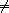

In this section, compare procedures for most of the atomic types of R5RS are defined: Booleans, characters, strings, symbols, and numbers.
As a general convention, it is required that the procedure named Compare-type compares two values of type type. It is an error if an argument is not of type type.
Compares two booleans, ordered by #f < #t.
Note: A non-#f value is not interpreted as a ``true value,'' but rather an error will be signalled.
Compare characters as char<=? and char-ci<=?, resp. (Recall that -ci indicates ``case insensitivity''.)
Compare strings as string<= and string-ci<=?.
Note: Compare-string could be defined as (define (compare-string string1 string2)
(compare-vector-as-list compare-char
string1 string2
string-length string-ref))
Compares symbols as string<= on the names returned by symbol->string.
Compare two numbers. It is an error if an argument is not of the type specified by the name of the procedure.
Complex numbers are ordered lexicographically on pairs (re, im). For real numbers, sign(x - y) is computed.
Numerical compare procedures are compatible with the R5RS numerical tower in the following sense: If S is a subtype of the numerical type T and x, y can be represented both in S and in T, then compare-S and compare-T compute the same result.
Warning: The propagation of inexactness can lead to surprises. For example in PLT 208:
(compare-complex (make-rectangular (/ 1 3) 1.)
===> -1
At first glance, one might expect the first complex number to be larger, because the numbers are equal on their real parts and the first imaginary part (1.) is larger than the second (-1). Closer inspection reveals that the decimal dot causes the first real part to be made inexact upon construction of the complex number, and since (exact->inexact (/ 1 3)) is less than (/ 1 3) in the underlying floating point format used, the real parts decide the comparison of the complex numbers.
In this section compare procedures are defined for Scheme lists and vectors -- and for objects that can be accessed like lists or like vectors.
An object x can be accessed like a vector if there are procedures size and ref such that (size x) is a non-negative integer n indicating the number of elements, and (ref x i) is the i-th element of x for i {0, ..., n - 1}. The default vector access procedures are vector-length and vector-ref.
An object x can be accessed like a (proper) list if there are procedures empty?, head, and tail such that (empty? x) is a boolean indicating that there are no elements in x, (head x) is the first element of x, and (tail x) is an object representing the residual elements of x. The default list access procedures are null?, car, and cdr.
Independent of the way the elements are accessed, the natural ordering of vectors and lists differs: Sequences are compared as vectors if shorter sequences are smaller than longer sequences, and sequences of the same size are compared lexicographically. Sequences are compared as lists if the empty sequence is smallest, and two non-empty sequences are compared by their first elements, and only if the first elements are equal the residual sequences are compared, recursively.
Compare two sequences x y, using compare for comparing elements. The result is an exact integer in { - 1, 0, 1}. If compare is not supplied, default-compare is used.
The procedure named compare-access-as-order accesses the objects like access and compares them as order. The names compare-type are abbreviations for compare-type-as-type.
Examples:
(compare-list '(2) '(1 2)) ===> 1
In this section, compare procedures for Scheme pairs and (possibly) improper lists are defined.
Construct a compare procedure on pairs which only uses the car (only the cdr, resp.), and ignores the other. One could define
(define (compare-car compare)
Rationale: Compare-car can be used to turn a search data structure (e.g. a heap) into a dictionary: Store (key . value) pairs and compare them using the compare procedure (compare-car compare-key).
Compares two pairs, or (possibly improper) lists.
The 4-ary form compares two pairs pair1 pair2 by comparing their cars using compare-car, and if the cars are equal the cdrs are compared using compare-cdr.
The 3-ary form compares two objects by type using the ordering of types
| null < pair < neither-null-nor-pair. |
Two objects of type neither-null-nor-pair are compared using compare. Two pairs are compared by using compare on the cars, and if the cars are equal by recursing on the cdrs.
The 2-ary form uses default-compare for compare.
(compare-pair '() 'foo) ===> -1
It is convenient to have a compare procedure readily available for comparing most built-in types.
compares its arguments by type using the ordering
| null < pair < boolean < char < string < symbol < number < vector < other |
Two objects of the same type type are compared as compare-type would, if there is such a procedure. The type null consists of the empty list '(). The effect of comparing two other objects or of comparing cyclic structures (made from lists or vectors) is unspecified.
Rationale: Default-compare refines compare-pair by splitting neither-null-nor-pair.
Note: Default-compare could be defined as follows (mind the order of the cases!):(define (default-compare x y)
(select-compare x y
(null? 0)
(pair? (default-compare (car x) (car y))
(default-compare (cdr x) (cdr y)))
(boolean? (compare-boolean x y))
(char? (compare-char x y))
(string? (compare-string x y))
(symbol? (compare-symbol x y))
(number? (compare-number x y))
(vector? (compare-vector default-compare x y))
(else (error "unrecognized types" x y))))
An important goal of this SRFI is a mechanism for defining new compare procedures as conveniently as possible. The syntactic extensions defined in this section are the primary utilities for doing so.
Syntax: The <ci> are expressions.
Semantics: The arguments <c1> ...are evaluated from left to right until a non-zero value is found (which then is the value) or until there are no more arguments to evaluate (in which case the value is 0.) It is allowed that there are no arguments at all.
Note: This macro is the preferred way to define a compare procedure as a refinement (refer to Section 5.) Example:(define (compare-rectangle r s)
(refine-compare
(compare-length (width r) (width s))
(compare-length (height r) (height s))))
Syntax: Each <clause>, with the possible exception of the last, is of the form
(<type?> <c1> ...) where <type?> is an expression evaluating to a predicate procedure, and <ci> are expressions evaluating to an exact integer in { - 1,0,1}. The last <clause> may be an ``else clause,'' which has the form (else <c1> ...).Semantics: A select-compare expression is a conditional for defining hierachical extension and refinement of compare procedures (refer to Section 5.) It compares the values of <x1> and <x2> by trying the type tests in order, and applies an implict refine-compare on the consequences upon a match.
In more detail, evaluation proceeds as follows: First <x1> and <x2> are evaluated in unspecified order, resulting in values x1 and x2, resp. Then the clauses are evaluated one by one, from left to right.
For clause (<type?> <c1> ...), first <type?> is evaluated resulting in a predicate procedure type? and then the expressions (type? x1) and (type? x2) are evaluated and interpreted as booleans. If both booleans are true then the overall value is (refine-compare <c1> ...). If only the first is true the result is -1, if only the second is true the result is 1, and if neither is true the next clause is considered. An else clause is treated as if both tests where true. If there are no clauses left, the result is 0.
Select-compare evaluates <x1> and <x2> exactly once, even in the absence of any clauses. Moreover, each <type?> is evaluated at most once and the resulting procedure type? is called at most twice.
Note: An example of select-compare is the definition of default-compare given above.
Syntax: Each <clause>, with the possible exception of the last, is of the form
((<t1> <t2>) <c1> ...) where <t1> and <t2> are expressions evaluating to booleans, and <ci> are expressions evaluating to an exact integer in { - 1,0,1}. The last <clause> may be an ``else clause,'' which has the form (else <c1> ...).Semantics: A cond-compare expression is another conditional for defining hierachical extension and refinement of compare procedures (refer to Section 5.)
Evaluation proceeds as follows: The clauses are evaluated one by one, from left to right. For clause ((<t1> <t2>) <c1> ...), first <t1> and <t2> are evaluated and the results are interpreted as boolean values. If both booleans are true then the overall value is (refine-compare <c1> ...). If only the first is true the result is -1, if only the second is true the result is 1, and if neither is true the next clause is considered. An else clause is treated as if both booleans where true. If there are no clauses left (or there are no clauses to begin with), the result is 0.
Cond-compare evaluates each expression at most once.
Rationale: Cond-compare and select-compare only differ in the way the type tests are specified. Both ways are equivalent, and each way is sometimes more convenient than the other.
The facilities defined in this section provide a mechanism for using a compare procedure (passed as a parameter) in the different situations arising in applications.
Syntax: <c>, <less>, <equal>, and <greater> are expressions.
Semantics: If3 is the 3-way conditional for comparisons. First <c> is evaluated, resulting in value c. The value c must be an exact integer in { - 1, 0, 1}, otherwise an error is signalled. If c = - 1 then the value of the if3-expression is obtained by evaluating <less>. If c = 0 then <equal> is evaluated. If c = 1 then <greater> is evaluated.
Note: As an example, the following procedure inserts x into the sorted list s, possibly replacing the first equivalent element. (define (insert compare x s)
(if (null? s)
(list x)
(if3 (compare x (car s))
(cons x s)
(cons x (cdr s)) ; replace
(cons (car s) (insert compare x (cdr s))))))
Rationale: If3 is the preferred way of branching on the result of a comparison in case all three branches are different.
Syntax: <c>, <consequent>, and <alternate> are expressions. If <alternate> is not provided, (if #f #f) is used.
Semantics: These six macros are 2-way conditionals for comparisons. First <c> is evaluated, resulting in value c. The value c must be an exact integer in { - 1, 0, 1}, otherwise an error is signalled. Then, depending on the value of c and the name of the macro, either <consequence> or <alternate> is evaluated, and the resulting value is the value of the conditional expression.
The branch is chosen according to the following table:
|
Note: The macros if<=? etc. are the preferred way of 2-way branching based on the result of a comparison.
Test if the values x and y are in the relation specified by the name of the procedure, with respect to compare procedure compare. If compare is not provided, default-compare is used. The result is a boolean (either #t or #f), depending on (compare x y) and the name of the procedure similar to if=? etc. It is guaranteed that compare is called exactly once.
Note: Char<=? could be defined in terms of compare-char as(define (char<=? x y)
(<=? compare-char x y))
Warning: A common mistake is writing (<=? x y z) where (<=/<=? x y z) is meant; this will most likely manifest itself at the time the expression (x y z) is evaluated.
Test if x, y, and z form a chain with the two relations specified by the name of the procedure, with respect to the compare procedure compare. If compare is not provided, default-compare is used. The result is a boolean (either #t or #f.) The order in which the values are compared is unspecified, but each value is compared at least once.
Note: (<=/<? compare-real 0 x 1) tests if x is a real number in the half open interval [0,1).
Test if the values x1 ...(zero or more values) form a chain with respect to the relation specified by the name of the procedure, and with respect to the compare procedure compare. The result is a boolean (either #t or #f.) The order in which the values are compared is unspecified, but each value is compared at least once (even if there is just one.)
A sequence of values x1, ..., xn forms a chain with respect to the relation rel? if (rel? compare xi xj) for all 1 < i < j < n. In particular, this is the case for n {0,1}.
Since the relations = , <, >, <, and > are transitive, it is sufficient to test (rel? compare xi xi+1) for 1 < i < n.
Tests if the values x1 ...(zero or more values) are pairwise unequal with respect to the compare procedure compare. The result is a boolean (either #t or #f.) The order in which the values are compared is unspecified, but each value is compared at least once (even if there is just one.)
The values x1, ..., xn are pairwise unequal if (not=? compare xi xj) for all i  j. In particular, this is the case for n {0,1}.
Since compare defines a total ordering on the values, the property can be checked in time O(n log n), and implementations are required to do this. (For example by first sorting and then comparing adjacent elements.)
A minimum or maximum of the values x1 x2 ...(one or more values) with respect to the compare procedure compare.
The result is the first value that is minimal (maximal, resp.) The order in which the values are compared is unspecified, but each value is compared at least once (even if there is just one value.)
The k-th largest element of values x0 x1 ...(one or more values) with respect to the compare procedure compare.
More precisely, (kth-largest compare k x0 ... xn-1) returns the (modulo k n)-th element of the unique sequence obtained by stably sorting (x0 ··· xn-1). (Recall that a sorting algorithm is stable if it does not permute items with equal key, i.e. equivalent w.r.t. compare.)
The argument k is an exact integer, and n > 1. The order in which the values xi are compared is unspecified, but each value is compare at least once (even if there is just one value.)
Note: The 0-th largest element is the minimum, the ( - 1)-st largest element is the maximum. The median is the (n - 1)/2-th largest element if n is odd, and the average of the (n/2 - 1)-st and n/2-th largest elements if n is even.
Compare x and y using the given predicate(s) and return the exact integer - 1, 0, or 1, resp. if x < y, x = y, or x > y, resp., in the order defined by the predicate(s).
The predicate procedures mean the following: (lt-pred x y) tests if x < y, le-pred tests for <, gt-pred for >, ge-pred for >, and eq-pred tests if x and y are equivalent. The result returned by a predicate procedure is interpreted as a Scheme truth value (i.e. #f is false and non-#f is true.)
These procedures comparepred(s) can be used to define a compare procedure from an order predicate and possibly an additional equivalence predicate. If an equivalence predicate eq-pred is given, it is used before the order predicate because the equivalence may be coarser than the total ordering, and eq-pred may be cheaper to evaluate.
Note: Compare-char could be defined in terms of char<=? as(define (compare-char x y)
(compare<= char<=? x y))
Constructs a compare procedure equivalent to compare but with debugging code wrapped around the calls to compare. The debugging code signals an error if it detects a violation of the axioms of a compare function. For this it is assumed that compare has no side-effects.
More specifically, (debug-compare compare) evaluates to a compare procedure compare1 which checks reflexivity, antisymmetry, and transitivity of compare based on the arguments on which compare1 is called:
The procedure compare1 checks reflexivity on any value passed to compare, antisymmetry on any pair of values on which compare is called, and transitivity on triples where two of the arguments are from the current call to compare1 and the third is a pseudo-random selection from the two arguments of the previous call to compare1.
Rationale: The test coverage is partial and determined pseudo-randomly, but the execution time of compare1 is only a constant factor larger than the execution time of compare.